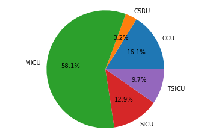
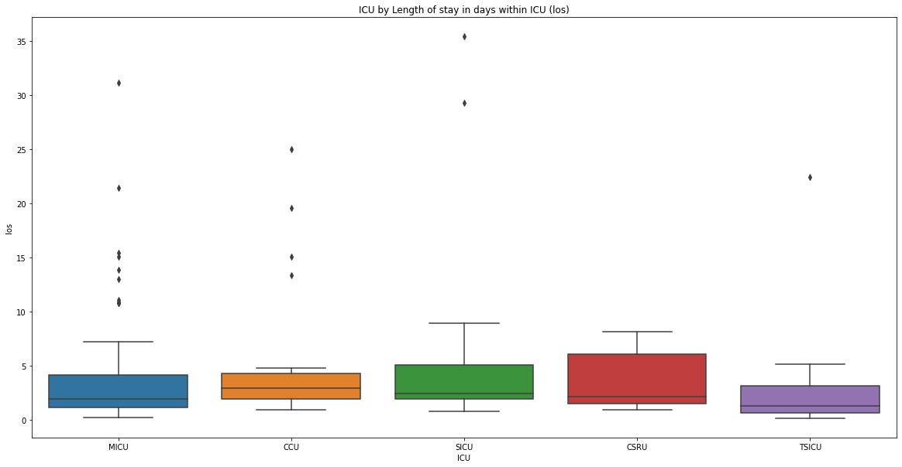
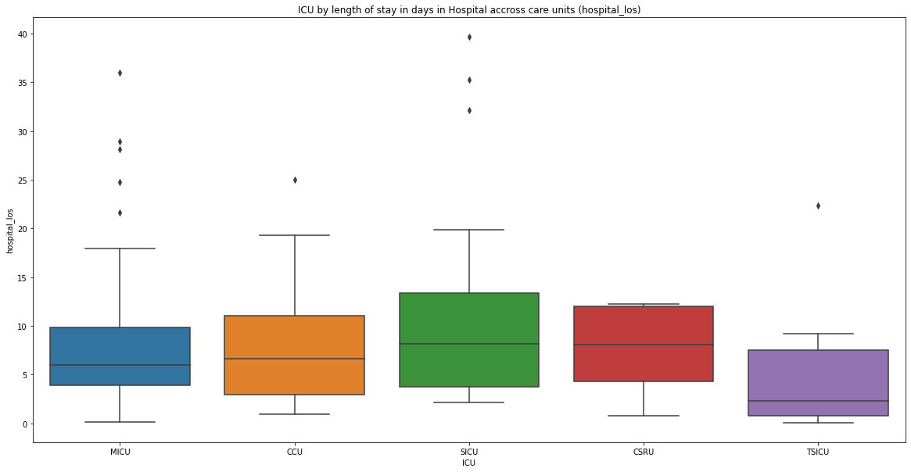

MIMIC-III (EHR) Clinical Outcomes & Patient Level Data
In this article we will further explore the MIMIC-III critical care Electronic Health Record Dataset, looking at how we examine clinical outcomes as well as extracting indivdual patient data.
Mortality is the most commonly used outcome in prediction studies in critical care, and in fact potentially across all of medicine. Since it is a strong surrogate for realness, machine learning practitioners use this signal to infer the relationship between clinical data and patient outcome. Mortality is a deceptively simple outcome to define. In fact, the nature of retrospective data often complicates matters. For example, in MIMIC database, a number of patients have two consecutive hospitalizations in which they die as organ donors. These consecutive hospitalizations are treated as distinct hospital admissions.
However, the underlying reason is the same. Mortality is susceptible to selection bias based on the source of the information. For example, many studies report hospital mortality as it is feasible to collect this information. However, the number of deaths recorded in the hospital database might not include the number of people that have died after they have been discharged and went to the home care. This adds noise to the outcome.
Other important factors in defining mortality as an outcome are controllable by the researcher. For example, defining mortality as death within 30 days of admission will provide a stronger signal for immediate physiological abnormality, which is likely related to the patient’s admission. On the other hand, one-year mortality will emphasize chronic illness in parallel conditions.
in this article we will see how we can extract the mortality numbers of adult patients who were admitted to the ICU and the distribution of this mortality numbers across the different ICUs in MIMIC dataset. If a patient’s death was registered while the patient was in ICU, or six hours before being admitted to, or six hours after leaving the ICU, we will assume that the patient has died in the intensive care unit.
3 Extract mortality numbers
3.1 1. Mortality numbers in ICU across care units
We would like to know the mortality numbers of adult patients who were admitted to the ICU, and the distribution of these mortality numbers across the different ICUs. If a patient’s death was registered while the patient was on the ICU, or 6 hours before being admitted to, or 6 hours after leaving the ICU, we assume that the patient has died on the ICU.
The following diagram visualizes the SQL query that is needed to obtain the ICU mortality numbers. We combine the Patients and Icustays tables based on the subject identifier, and select each patient’s date of birth and date of death, and the care unit and admission time corresponding to each ICU stay. The admission time and date of death together indicate whether or not a patient died on the ICU. The age (age >= 16) is again combined from the admission time and date of birth.
# Compose SQL queryquery ="""SELECT i.first_careunit, round((EXTRACT(EPOCH FROM (i.intime-p.dob))/60/60/24/365.242) :: NUMERIC, 4) as age,CASE WHEN p.dod IS NOT NULL AND p.dod >= i.intime - interval '6 hour' AND p.dod <= i.outtime + interval '6 hour' THEN 'Died in ICU' ELSE 'Not dead' END AS icu_mortalityFROM public.patients pINNER JOIN public.icustays i ON p.subject_id = i.subject_idWHERE round((EXTRACT(EPOCH FROM (i.intime-p.dob))/60/60/24/365.242) :: NUMERIC, 4) >= 16;"""# Run queryquery_output = pd.read_sql_query(query,con)query_output.head()
Overall mortality - Totals
Not dead 105
Died in ICU 31
Name: icu_mortality, dtype: int64
Overall mortality - Percentages
Not dead 77.205882
Died in ICU 22.794118
Name: icu_mortality, dtype: float64
Mortality per ICU - Totals
first_careunit icu_mortality
CCU Died in ICU 5
Not dead 14
CSRU Died in ICU 1
Not dead 5
MICU Died in ICU 18
Not dead 59
SICU Died in ICU 4
Not dead 19
TSICU Died in ICU 3
Not dead 8
Name: icu_mortality, dtype: int64
Mortality per ICU - Percentages
first_careunit icu_mortality
CCU Died in ICU 26.315789
Not dead 73.684211
CSRU Died in ICU 16.666667
Not dead 83.333333
MICU Died in ICU 23.376623
Not dead 76.623377
SICU Died in ICU 17.391304
Not dead 82.608696
TSICU Died in ICU 27.272727
Not dead 72.727273
Name: icu_mortality, dtype: float64
Mortality accross all ICUs

3.2 2. Mortality numbers in hospital across care units
We would also like to know the mortality numbers of adult patients who were admitted to hospital, and the distribution of those numbers across different ICUs. In this case, there is a variable called ‘hospital_expire_flag’ in the Admissions table that defines if a patient has died in hospital.
The Patients and Icustays tables are combined based on the subject’s unique identifier, and the Admissions table is also joined based on the hospital admission’s identifier. We will need to select the hospital admission’s identifier, care unit, admission time and ‘hospital_expire_flag’. We also need the date of birth to obtain the age (age >= 16).
# Compose SQL queryquery ="""SELECT i.first_careunit, a.hospital_expire_flag, round((EXTRACT(EPOCH FROM (a.admittime-p.dob))/60/60/24/365.242) :: NUMERIC, 4) as age FROM public.Icustays i INNER JOIN public.patients p ON i.subject_id = p.subject_id INNER JOIN public.Admissions a ON i.hadm_id = a.hadm_id WHERE round((EXTRACT(EPOCH FROM (a.admittime-p.dob))/60/60/24/365.242) :: NUMERIC, 4) >= 16"""# Run queryquery_output = pd.read_sql_query(query,con)query_output.head()
4.1 1. Length of stay on the ICU across care units
We would like to know how many days each patient has to stay on the ICU. We want to know the median, lower quantile and upper quantile for the length of stay, and also these values for each different ICU. As for all queries, we only select adult patients (age >= 16).
The length of stay on the ICU can be found in the Icustays table. We also need the corresponding care unit and time of admission of each ICU admission. To get the date of birth for each patient (and hence the age, computed from the admission time and date of birth), we combine the Icustays and Patients tables.
# Compose SQL queryquery ="""SELECT i.first_careunit, i.los, round((EXTRACT(EPOCH FROM (i.intime-p.dob))/60/60/24/365.242) :: NUMERIC, 4) as age FROM public.Icustays i INNER JOIN public.patients p ON i.subject_id = p.subject_id WHERE round((EXTRACT(EPOCH FROM (i.intime-p.dob))/60/60/24/365.242) :: NUMERIC, 4) >= 16"""# Run queryquery_output = pd.read_sql_query(query,con)query_output.head()
first_careunit
los
age
0
MICU
1.6325
70.6378
1
MICU
13.8507
36.1923
2
MICU
2.6499
87.0874
3
CCU
2.1436
73.6875
4
MICU
1.2938
48.9015
# Define function for descriptive stats 5 number summary for a field per icudef icu_descriptive_stats(field, df, boxplot_title):# Get list of ICUs icu_list = df['first_careunit'].unique()# Plot descriptive stats for each ICUfor icu in icu_list:print(' ')print('Descriptive statistics for '+str(icu) +' by '+ field) icu_df = df[df['first_careunit'] == icu]print(icu_df[field].describe()) # Plot box plot of ICU by field plt.figure(figsize=(20,10)) sns.boxplot(data=df, x='first_careunit', y=field) plt.xlabel('ICU') plt.title(boxplot_title) # 5 number summary all ICUs for los (length of stay within icu)icu_descriptive_stats('los', query_output, 'ICU by Length of stay in days within ICU (los)')
Descriptive statistics for MICU by los
count 77.000000
mean 3.955345
std 5.193230
min 0.190400
25% 1.135800
50% 1.925200
75% 4.101400
max 31.123500
Name: los, dtype: float64
Descriptive statistics for CCU by los
count 19.000000
mean 5.753900
std 7.024671
min 0.879900
25% 1.862600
50% 2.883300
75% 4.242450
max 24.996800
Name: los, dtype: float64
Descriptive statistics for SICU by los
count 23.000000
mean 5.668461
std 8.751901
min 0.743700
25% 1.910350
50% 2.405600
75% 5.022700
max 35.406500
Name: los, dtype: float64
Descriptive statistics for CSRU by los
count 6.000000
mean 3.631350
std 3.199466
min 0.901700
25% 1.464500
50% 2.084000
75% 6.010175
max 8.141500
Name: los, dtype: float64
Descriptive statistics for TSICU by los
count 11.000000
mean 3.589609
std 6.422052
min 0.105900
25% 0.647600
50% 1.276200
75% 3.110500
max 22.389500
Name: los, dtype: float64

4.2 2. Length of stay in hospital across care units
This query is almost similar to the previous one, but now we are interested in the length of stay (in days) of adult patients in hospital instead of on the ICUs. We are also interested to know the distribution of those values across ICUs.
We combine the Patients and Icustays tables based on the subject identifier, and the Admissions table based on the unique hospital admission identifier. This time, we use date of birth and time of admission to the hospital to compute age, and filter on it using age >= 16. There is no variable for length of stay in hospital, but we can compute it by subtracting the discharge time from the admission time. Moreover, we will need the ICU the patient is admitted to. The unique hospital admission identifier is used to make sure each hospital admission corresponds to only one ICU (we use the hospital admission identifier to remove duplicates).
# Compose SQL queryquery =""" SELECT i.first_careunit, a.hadm_id, a.dischtime, a.admittime, round((EXTRACT(EPOCH FROM (a.admittime-p.dob))/60/60/24/365.242) :: NUMERIC, 4) as age, round((EXTRACT(EPOCH FROM (a.dischtime-a.admittime))/60/60/24) :: NUMERIC, 4) as hospital_los FROM public.Icustays i INNER JOIN public.patients p ON i.subject_id = p.subject_id INNER JOIN public.Admissions a ON i.hadm_id = a.hadm_id WHERE round((EXTRACT(EPOCH FROM (a.admittime-p.dob))/60/60/24/365.242) :: NUMERIC, 4) >= 16"""# Run queryquery_output = pd.read_sql_query(query,con)# Drop duplicates based on unique hospital admission idquery_output = query_output.drop_duplicates(['hadm_id'])# Remove outliersquery_output = query_output[query_output['hospital_los'] <100]query_output.head()
first_careunit
hadm_id
dischtime
admittime
age
hospital_los
0
MICU
142345
2164-11-01 17:15:00
2164-10-23 21:09:00
70.6378
8.8375
1
MICU
105331
2126-08-28 18:59:00
2126-08-14 22:32:00
36.1923
13.8521
2
MICU
165520
2125-10-07 15:13:00
2125-10-04 23:36:00
87.0874
2.6507
3
CCU
199207
2149-06-03 18:42:00
2149-05-26 17:19:00
73.6792
8.0576
4
MICU
177759
2163-05-15 12:00:00
2163-05-14 20:43:00
48.9014
0.6368
# 5 number summary all ICUs for los (length of stay in hospital)icu_descriptive_stats('hospital_los', query_output, 'ICU by length of stay in days in Hospital accross care units (hospital_los)')
Descriptive statistics for MICU by hospital_los
count 73.000000
mean 8.073463
std 6.847850
min 0.144400
25% 3.903500
50% 5.988200
75% 9.797900
max 36.011800
Name: hospital_los, dtype: float64
Descriptive statistics for CCU by hospital_los
count 16.000000
mean 8.274125
std 6.723373
min 0.959000
25% 2.949825
50% 6.618750
75% 11.067150
max 24.997900
Name: hospital_los, dtype: float64
Descriptive statistics for SICU by hospital_los
count 22.000000
mean 11.616982
std 10.893085
min 2.107600
25% 3.697600
50% 8.138900
75% 13.385575
max 39.697200
Name: hospital_los, dtype: float64
Descriptive statistics for CSRU by hospital_los
count 6.000000
mean 7.588333
std 4.976149
min 0.770800
25% 4.284925
50% 8.046200
75% 12.027300
max 12.281300
Name: hospital_los, dtype: float64
Descriptive statistics for TSICU by hospital_los
count 11.000000
mean 5.184909
std 6.637594
min 0.038200
25% 0.760750
50% 2.320100
75% 7.488200
max 22.390300
Name: hospital_los, dtype: float64

5 Extracting Vital Signs for a single patient from MIMIC-III
It is useful to be able to extract vital signs and medication of a single patient that was admitted to an intensive care unit, for example we might need to extract clinical variables across patients such as lab exams, sign and wave forms, as well as doctor reports and prescriptions. For thsi example we will pick randomly an ICU stay identifier and the corresponding subject identifier. We will then look the data related to this patient and this ICU stay admission.
5.1 1. Hospital admission of a single patient
First of all we would like to get the hospital admission of a single patient during a single ICU stay. We want to have table with the patient’s unique subject identifier, hospital identifier, the admission type, the diagnosis, the ICU stay identifier, the first and last care unit that he/she was admitted to, and the time of admission to the ICU. We also want to choose for our example a patient who died in-hospital.
We will need the Admissions, Patients, and Icustays tables to collect the information that we need. We join the three tables, and find only the patients who have died i.e. where hospital_expire_flag is 1.
# Load admissionsquery ="""SELECT ad.subject_id, ad.hadm_id, ad.admission_type, ad.diagnosis, ic.icustay_id, ic.first_careunit, ic.last_careunit, ic.intime as icu_intime, ad.hospital_expire_flag, pa.expire_flagFROM admissions adINNER JOIN icustays icON ad.subject_id = ic.subject_idINNER JOIN patients paON ad.subject_id = pa.subject_idWHERE ad.hospital_expire_flag = 1 ORDER BY ic.intime"""admissions = pd.read_sql_query(query,con)# Show the (first few) rows of admissions:admissions.head()
subject_id
hadm_id
admission_type
diagnosis
icustay_id
first_careunit
last_careunit
icu_intime
hospital_expire_flag
expire_flag
0
10102
164869
EMERGENCY
CHRONIC MYELOGENOUS LEUKEMIA;TRANSFUSION REACTION
223870
MICU
MICU
2105-06-08 20:06:06
1
1
1
10076
198503
EMERGENCY
LUNG CANCER;SHORTNESS OF BREATH
201006
MICU
MICU
2107-03-24 04:06:14
1
1
2
43746
167181
EMERGENCY
METASTIC MELANOMA;ANEMIA
289236
SICU
SICU
2111-01-07 16:36:48
1
1
3
43746
167181
EMERGENCY
METASTIC MELANOMA;ANEMIA
224458
SICU
SICU
2111-01-12 15:26:49
1
1
4
42066
171628
EMERGENCY
TRACHEAL STENOSIS
244243
TSICU
TSICU
2112-02-04 14:49:33
1
1
# Select a single ICU stay. We will select oneicustay_id = admissions['icustay_id'].iloc[2]icustay_id
289236
5.2 2. All charted events of a single patient
Charted events contain information such as heart rate and respiratory rate of a patient. We would like all charted events of a single patient, along with the time of the charted events, the time between admission to the ICU and the charted event, the label corresponding to the event, and the value and measurement unit of the event.
We need the Chartevents and Icustays tables to get the charted events for a single patient on the ICU. We also join the D_items table to get the label of a charted event. Moreover, we filter on a specific ICU stay ID to get the data for a single patient and single ICU admission.
# Load chart eventsquery ="""SELECT ic.icustay_id, ce.charttime, ce.charttime - ic.intime AS icutime, di.label, ce.value, ce.valuenum, ce.valueuomFROM Chartevents ceINNER JOIN D_items as diON ce.itemid = di.itemidINNER JOIN icustays icON ce.icustay_id = ic.icustay_idWHERE ic.icustay_id = """+str(icustay_id) +""" ORDER BY ce.charttime"""chartevents = pd.read_sql_query(query,con)# Show the (first few) rows of admissions:chartevents.head()
icustay_id
charttime
icutime
label
value
valuenum
valueuom
0
289236
2111-01-07 15:00:00
-1 days +22:23:12
Head of Bed
30 Degrees
NaN
None
1
289236
2111-01-07 15:00:00
-1 days +22:23:12
Activity
Bedrest
NaN
None
2
289236
2111-01-07 15:00:00
-1 days +22:23:12
Turn
Side to Side
NaN
None
3
289236
2111-01-07 15:00:00
-1 days +22:23:12
Assistance Device
2 Person Assist
NaN
None
4
289236
2111-01-07 15:00:00
-1 days +22:23:12
Position
Left Side
NaN
None
5.3 3. All outputs recorded during an ICU stay of a single patient
Output events are also recorded during an ICU stay. We would like to collect the time of the output event, the time since admission to the ICU, the label of the event, the value and the corresponding measurement event.
The query is similar to the previous query, however, this time we will need the Outputevents table and combine it with the Icustays and D_items tables. We again filter on a specific ICU stay ID to get the data for a single patient and a single ICU stay. The charted time and time of ICU admission are combined to get the time of the output event since the time of ICU admission.
# Load Output eventsquery ="""SELECT ic.icustay_id, oe.charttime, oe.charttime - ic.intime AS icutime, di.label, oe.value, oe.valueuomFROM Outputevents oeINNER JOIN D_items as diON oe.itemid = di.itemidINNER JOIN icustays icON oe.icustay_id = ic.icustay_idWHERE ic.icustay_id = """+str(icustay_id) +""" ORDER BY oe.charttime"""outputevents = pd.read_sql_query(query,con)# Show the (first few) rows of admissions:outputevents.head()
icustay_id
charttime
icutime
label
value
valueuom
0
289236
2111-01-07 17:00:00
0 days 00:23:12
Pre-Admission
194.0
mL
1
289236
2111-01-07 17:30:00
0 days 00:53:12
Foley
45.0
mL
2
289236
2111-01-07 18:28:00
0 days 01:51:12
Pre-Admission
194.0
mL
3
289236
2111-01-07 18:35:00
0 days 01:58:12
Foley
20.0
mL
4
289236
2111-01-07 19:00:00
0 days 02:23:12
Foley
30.0
mL
5.4 4. All inputs recorded during an ICU stay of a single patient
Input events could be, for example, the use of medication. We would like to collect all input events for a single patient and ICU stay. We are also interested in the corresponding start and end times of the events, those times relative to ICU admission time, the label of the input event, the amount and measurement unit, and how often the input event (medication) is administered.
The input events can be found in the Inputevents_mv table. We join this table with the Icustays and D_items tables to get the time of admission to the ICU and label corresponding to the input event. Again, we filter on a specific ICU stay ID to get the data for a single patient and a single ICU stay. We also filter out rewritten input events.
# Load Input eventsquery ="""SELECT ic.icustay_id, ie.starttime, ie.endtime, ie.starttime - ic.intime as icustarttime, ie.endtime - ic.intime as icuendtime, di.label, ie.amount, ie.amountuom, ie.rate, ie.rateuom, ie.statusdescriptionFROM inputevents_mv ieINNER JOIN icustays icON ie.icustay_id = ic.icustay_idINNER JOIN D_items as diON ie.itemid = di.itemidWHERE ic.icustay_id = """+str(icustay_id) +""" AND lower(ie.statusdescription) != 'rewritten'ORDER BY ie.starttime"""inputevents = pd.read_sql_query(query,con)# Show the (first few) rows of admissions:inputevents.head()
icustay_id
starttime
endtime
icustarttime
icuendtime
label
amount
amountuom
rate
rateuom
statusdescription
0
289236
2111-01-07 16:45:00
2111-01-07 16:46:00
0 days 00:08:12
0 days 00:09:12
Pre-Admission Intake
3400.000000
ml
NaN
None
FinishedRunning
1
289236
2111-01-07 17:00:00
2111-01-08 00:56:00
0 days 00:23:12
0 days 08:19:12
D5 1/2NS
991.699971
ml
125.004198
mL/hour
FinishedRunning
2
289236
2111-01-07 18:00:00
2111-01-07 18:01:00
0 days 01:23:12
0 days 01:24:12
NaCl 0.9%
500.000000
ml
NaN
None
FinishedRunning
3
289236
2111-01-07 18:30:00
2111-01-07 18:31:00
0 days 01:53:12
0 days 01:54:12
Morphine Sulfate
2.000000
mg
NaN
None
FinishedRunning
4
289236
2111-01-07 20:13:00
2111-01-07 20:43:00
0 days 03:36:12
0 days 04:06:12
Albumin 25%
49.999998
ml
99.999996
mL/hour
FinishedRunning
5.5 5. All lab events recorded during an ICU stay of a single patient
Examples of lab events could be the number of red blood cells in the body, or magnesium levels. We want to get all lab events for a single patient and a single ICU stay. We also are interested to see the time of these lab events, time since ICU admission, label, value, and measurement unit.
Lab events are in the Labevents table. We join the Icustays and D_labitems tables, and filter out any lab events that were recorded before or after the patient was at the ICU.
# Load lab eventsquery ="""SELECT ic.subject_id, ic.icustay_id, le.charttime, le.charttime - ic.intime as icutime, di.label, le.value, le.valuenum, le.valueuom FROM labevents leINNER JOIN icustays ic ON le.subject_id = ic.subject_id AND le.charttime >= ic.intime AND le.charttime <= ic.outtimeINNER JOIN D_labitems as di ON le.itemid = di.itemidWHERE ic.icustay_id = """+str(icustay_id) +""" ORDER BY le.charttime"""labevents = pd.read_sql_query(query,con)# Show the (first few) rows of admissions:labevents.head()